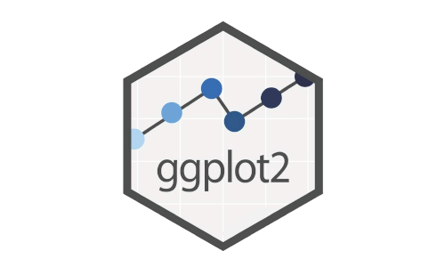
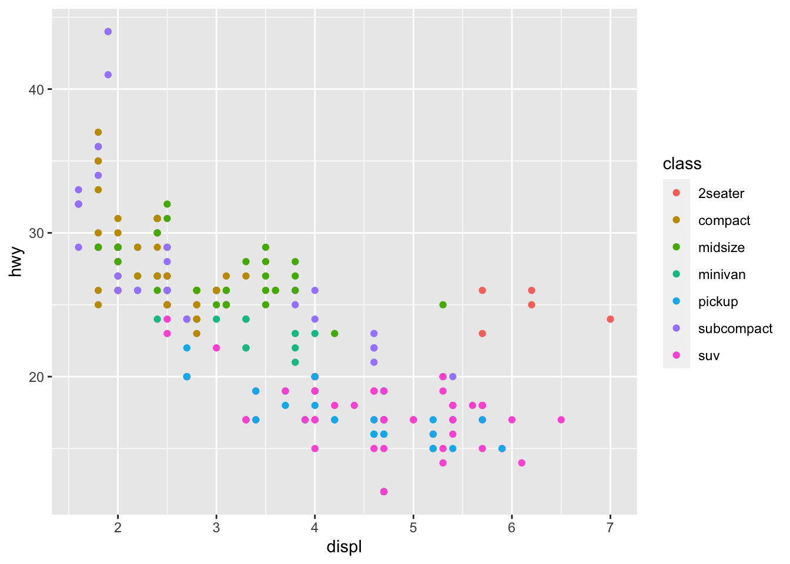

Capítulo 3 ggplot2: Componentes base

La librería ggplot2 de Hadley Wickham et al. (2005), parte del ecosistema de paquetes tidyverse, es un sistema declarativo para la creación de gráficos. ¿Qué quiere decir eso? Que le señalamos a ggplot2 cuál es nuestra data, cómo mapearla, qué elementos gráficos usar, y ggplot se encarga del resto.
ggplot(mpg, aes(displ, hwy, colour = class)) +
geom_point()Son 3 los componentes base a la hora de trabajar con ggplot2:
- Data: literalmente son los datos que le entregaremos. Comunmente serán data frames o similares. Pueden estar agrupados o no. En el caso de nuestro ejemplo corresponde a
mpg. - Aesthetic mapping: corresponde a indicadores en torno a la data que usamos. Posiblemente los más comunes e importantes son los parámetros x e y (ej. en un diagrama de dispersión). También podemos incorporar distinción por colores, formas, etc. En nuestra sintaxis de ejemplo, corresponde a
aes(displ, hwy, colour = class). - Geometry: Hasta ahora hemos señalado nuestra data y qué representación le daremos en el gráfico, sin embargo, nos falta el último componente: ¿qué tipo de gráfico usaremos? Es posible generar puntos, barras, cajas, etc. Las geometrías suelen ser combinables dependiendo del tipo de información con la que trabajes. En nuestro código de ejemplo corresponde a
geom_point().
El resultado de ejemplo es el siguiente:
